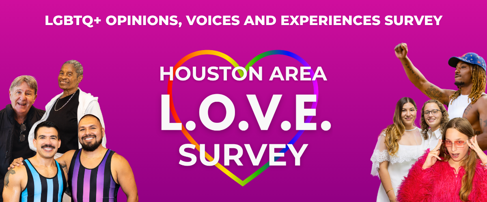
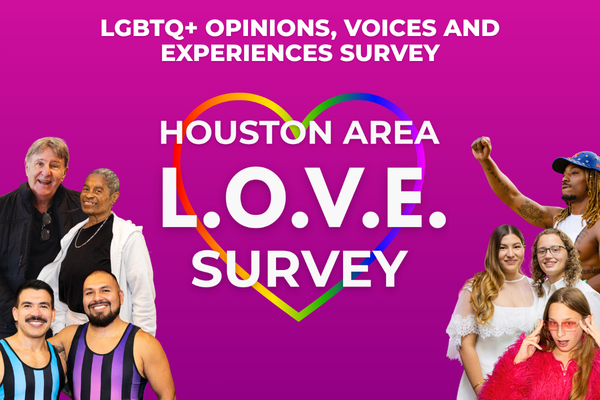

What does the LGBTQ+ community actually need? That depends on who you ask.
The Houston Area L.O.V.E. Survey — LGBTQ+ Opinions, Voices & Experiences — is the FIRST community-wide survey of LGBTQ+ life in Greater Houston, covering healthcare, mental health, housing, workplace culture, financial security, discrimination, and more.
There is no comprehensive data on what LGBTQ+ Houstonians need. Without data, decisions get made without us. This survey changes that.
Your 15 minutes helps shape how our region shows up for us.
This survey is a partnership between the Kinder Institute for Urban Research at Rice University, the Montrose Center, and the Greater Houston LGBTQ+ Chamber of Commerce — backed by more than two dozen LGBTQ+ organizations across the region working together to amplify this effort.
Available in English and Spanish. All responses are de-identified and confidential.
Results will be shared with local leaders and community organizations to drive real change. Be one of them.
Adults (18+) who live in the Greater Houston area — including Harris, Fort Bend, Montgomery, Galveston, Brazoria, Chambers, Liberty, and Waller counties — and who self-identify as a member of the LGBTQ+ community.
All responses are completely de-identified — your answers cannot be traced back to you. Data is stored on secure drives at Rice University, protected to the full extent of the law, and will never be sold. Responses are used exclusively for research purposes.
After the screener confirms eligibility, we need a way to send you the secure survey link. This also helps minimize bots and protect data quality. Your contact information is kept confidential and protected by Rice University.
No. The screener questions are required to confirm eligibility, but you can skip any question on the full survey that you’re not comfortable answering.
Results will uplift voices from across the LGBTQ+ community, connect findings to local leaders and organizations, and establish a repeatable baseline that can be tracked over time. All research is made freely available to the public.
Yes. The survey is available in both English and Spanish.
Share the screener link with your networks, post on social media, include it in newsletters, and encourage community members to participate. For partnership inquiries or co-branded materials, contact lgbtqsurvey@rice.edu.
Start with the 2-minute screener. If eligible, you’ll receive a link to the full survey.
Data is stored securely at Rice University, will never be sold, and is used for research purposes only.
¿Qué necesita realmente la comunidad LGBTQ+? Eso depende de a quién le preguntes.
La Encuesta L.O.V.E. del Área de Houston — Opiniones, Voces y Experiencias LGBTQ+ — es la PRIMERA encuesta comunitaria sobre la vida LGBTQ+ en el área metropolitana de Houston. Cubre temas como acceso a la salud, salud mental, vivienda, cultura laboral, seguridad financiera, discriminación y más.
No existen datos completos sobre lo que las personas LGBTQ+ de Houston necesitan. Sin datos, las decisiones se toman sin nosotros. Esta encuesta cambia eso.
Tus 15 minutos ayudan a influir en cómo nuestra región se presentará para nosotros.
Esta encuesta es una colaboración entre el Kinder Institute for Urban Research de Rice University, el Montrose Center y la Greater Houston LGBTQ+ Chamber of Commerce — respaldada por más de dos docenas de organizaciones LGBTQ+ en toda la región trabajando juntas para amplificar este esfuerzo.
Disponible en inglés y español. Todas las respuestas son anónimas y confidenciales.
Los resultados se compartirán con líderes locales y organizaciones comunitarias para impulsar un cambio real. Sé una de esas voces.
Adultos (mayores de 18 años) que vivan en el área metropolitana de Houston — incluyendo los condados de Harris, Fort Bend, Montgomery, Galveston, Brazoria, Chambers, Liberty y Waller — y que se identifiquen como miembro de la comunidad LGBTQ+.
Todas las respuestas son completamente desidentificadas — tus respuestas no pueden rastrearse hasta ti. Los datos se almacenan en servidores seguros de Rice University, protegidos en toda la extensión de la ley, y nunca se venderán. Las respuestas se utilizan exclusivamente con fines de investigación.
Después de que el cuestionario confirme tu elegibilidad, necesitamos una forma de enviarte el enlace seguro a la encuesta. Esto también ayuda a minimizar bots y proteger la calidad de los datos. Tu información de contacto se mantiene confidencial y está protegida por Rice University.
No. Las preguntas del cuestionario de elegibilidad son obligatorias, pero puedes omitir cualquier pregunta de la encuesta completa que prefieras no contestar.
Los resultados amplificarán las voces de toda la comunidad LGBTQ+, conectarán los hallazgos con líderes locales y organizaciones, y establecerán una línea base que se podrá monitorear a lo largo del tiempo. Toda la investigación se pone a disposición del público de forma gratuita.
Sí. La encuesta está disponible en inglés y español.
Comparte el enlace del cuestionario con tus redes, publica en redes sociales, inclúyelo en boletines informativos y anima a los miembros de la comunidad a participar. Para consultas sobre colaboración o materiales, contacta a lgbtqsurvey@rice.edu.
Comienza con el cuestionario de 2 minutos. Si eres elegible, recibirás un enlace a la encuesta completa.
Los datos se almacenan de forma segura en Rice University, nunca se venderán y se utilizan exclusivamente con fines de investigación.
A Partnership Between